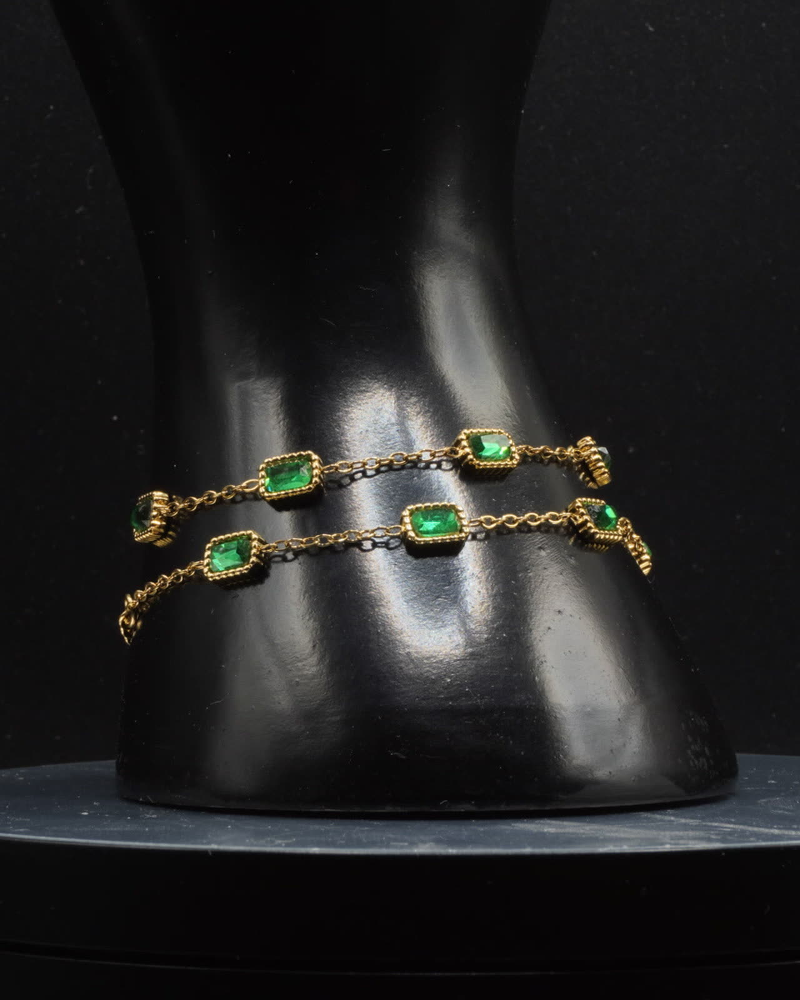
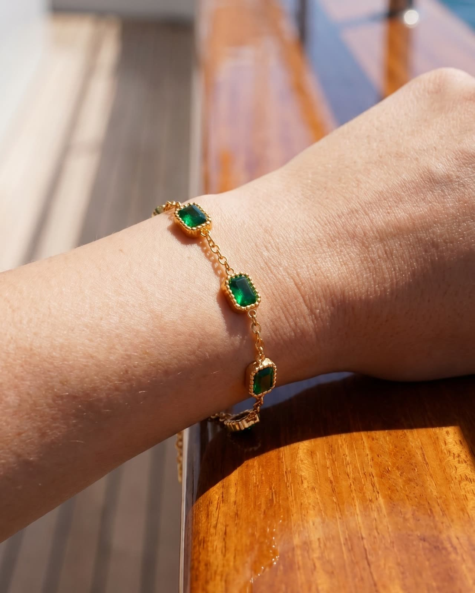
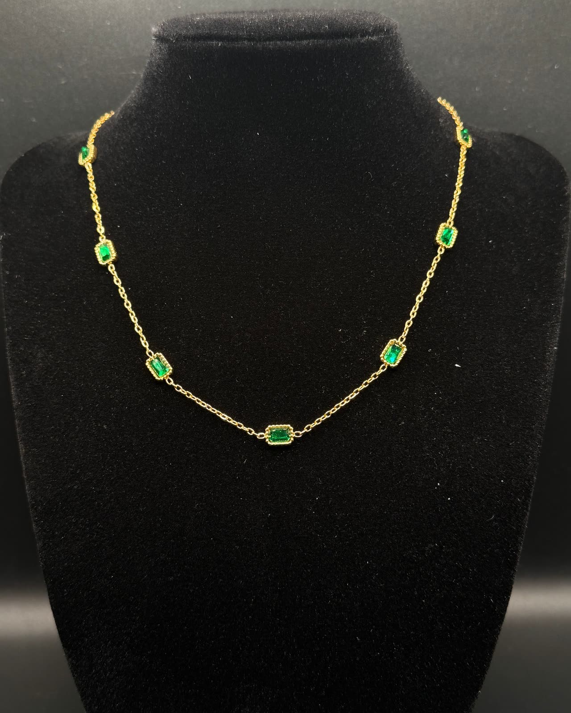
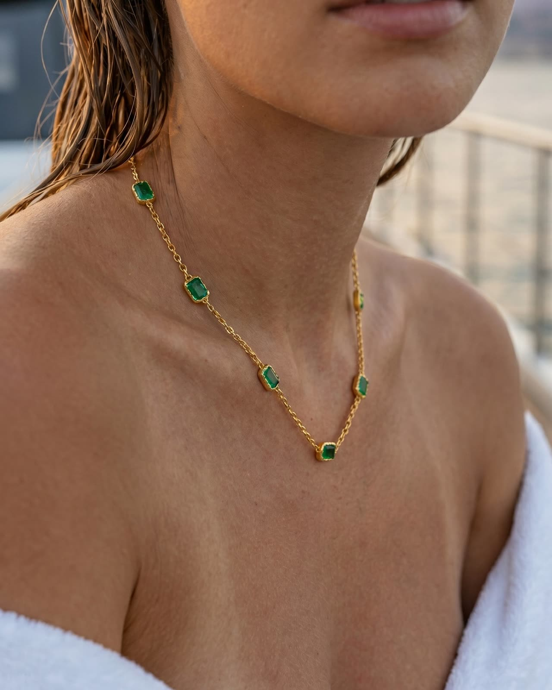
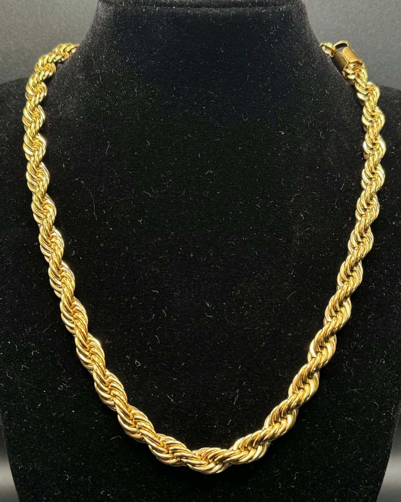
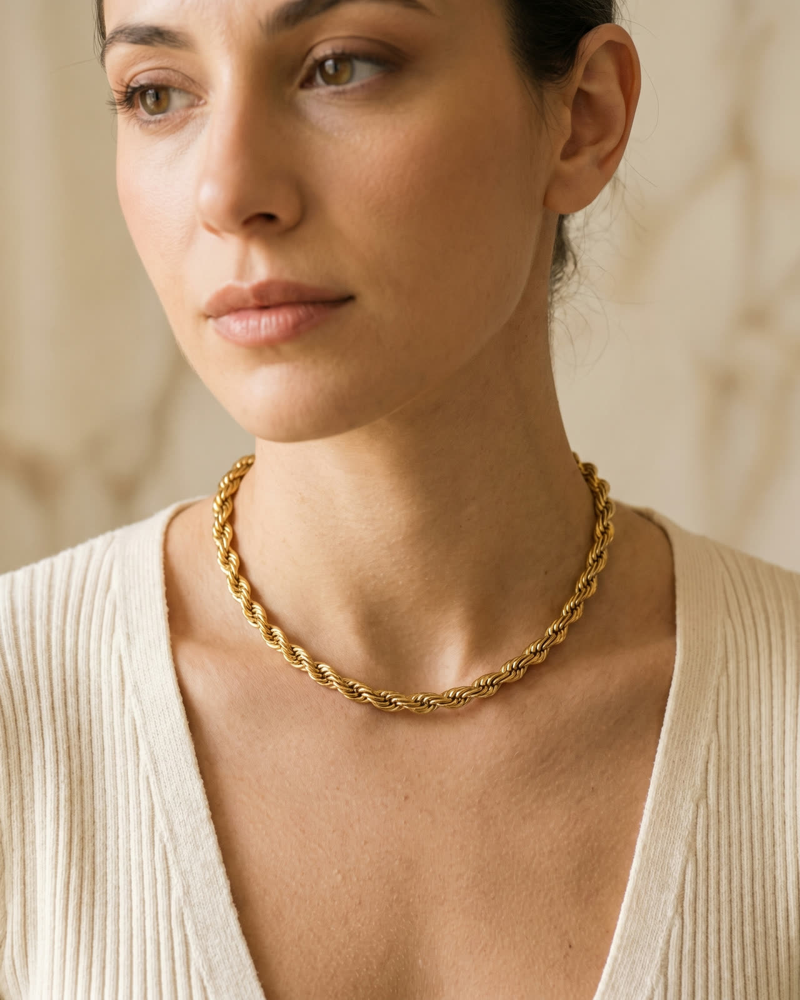

Le foto Dalla foto vera allo scatto sul negozio. Il riferimentoAlmeno tre foto vere del gioiello, da angoli diversi: sono quello che lo scatto non può tradire. Le regole di fedeltàPer ogni gioiello, cosa non si può cambiare: le pietre, le chiusure, l'oro. Il controlloOgni scatto si confronta con le foto vere, uno per uno, prima di andare sul negozio. Prima · Bracciale Sorrento Dopo · sul negozio Prima · Collana Sorrento Dopo · sul negozio Prima · Collana Corda Dopo · sul negozio
Il film dell'isola, nella home. Nella home del sito nuovo un film accompagna lo scroll, con una fermata per ogni collezione. Qui ne vedi l'inizio. auragioielli.net Il sito nuovo · in arrivo online